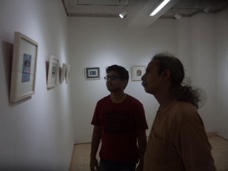

প্রচ্ছদকাহিনী :
পরম্পরা :
উৎসব :
song - গীত :
আনুষঙ্গিক :
চিত্রকলা :
ট্রেভেলগ :
স্বাস্থ্য :
অন্তরে অন্দরে :
চিত্রকলা - পুঁথিচিত্রের কথা
মিনিয়েচার শব্দটা এসেছে মিনি” বা ম্যানুস্ক্রিপ্ট শব্দ থেকে । ওল্ড বুক ইলাস্ট্রেশন বা পুঁথিচিত্রের আরেক নাম মিনিয়েচার। হাতে লেখা প্রাচীন পুঁথিতে বিষয়বস্তু বর্ণনার সুবিধার জন্য হাতে আঁকা চিত্র সংযুক্ত থাকতো। চিত্রাঙ্কনের এই ধারাই মিনিয়েচার আর্ট ফর্ম। চিত্রশিল্পী সঞ্জীব সাহা জানান,
সাধারণত এই পেইন্টিংগুলো ৮ বাই ১০ ইঞ্চি মাপে আঁকার রীতি ছিল। এই সাইজকে রাফবুক সাইজ বলা হতো। হাতে নিয়ে বইটি পড়ার সময় যেন ছবিগুলো দেখা যায় এমনভাবে আঁকা হতো। ছবিগুলো থাকতো ন্যারেটিভ লেখা থাকতো খুব অল্প। কিন্তু সুচারুভাবে মিনিয়েচার আর্টের বৈশিষ্ট্য ছিল উজ্জ্বল জলরং ব্যবহার করা , মুলত প্রাকৃতিক রং যেমন গাছের বাকল, মাটি, বীজ থেকে রং আর কষ আর আঠা দিয়ে বাইন্ডার বা ইমালশন বানানো হত। প্রথমদিকে মিনিয়েচার আর্টের দুইটি ঘরানা ছিল, রাজপুত ও পারস্য ঘরানা। রাজপুত প্রাচীন ভারতীয় উপমহাদেশের লোকজ ও পৌরাণিক ঘরানা। এই ঘরানার বেশিরভাগ ছবিই থাকতো রাধা-কৃষ্ণের কাহিনীনির্ভর।
মুঘল আমলে সাহিত্যিক, সঙ্গীতশিল্পীদের পাশাপাশি চিত্রশিল্পীরাও পৃষ্ঠপোষকতা পান এবং পারস্য থেকে দুজন বিখ্যাত মিনিয়েচার শিল্পীকে উপমহাদেশের রাজপুত ঘরানার শিল্পীদের প্রশিক্ষণ দেয়ার জন্য নিয়ে আসা হয়। এরপর থেকে মিনিয়েচার আর্টে দুই ঘরানার সংমিশ্রণ ঘটতে থাকে। পারস্য আর রাজপুত মিলে নতুন ঘরানার নাম হল মুঘল ঘরানা। সেসময় অজস্র ছবি মুঘল ঘরানায় আঁকা হয়। তৎকালীন সময়ের একটি বইয়ে প্রায় ২০০০ মিনিয়েচার আর্টের নিদর্শন পাওয়া গেছে। আমাদের দেশের লালবাগ কেল্লার যাদুঘরেও কিছু নিদর্শন পাওয়া যায়।সবচেয়ে বেশি মিনিয়েচার আঁকা হয়েছে আকবরের সময়।শাহজাহানের আমল পর্যন্ত এই শিল্পচর্চা অব্যাহত থাকে কিন্তু আওরঙ্গজেবের সময় ধর্মীয় নিষেধাজ্ঞার কারণে চিত্রশিল্পের অনেক ধারার সাথে মিনিয়েচারের চর্চাও কমে যায়।
পর্তুগিজরা উপমহাদেশে আসার সময়ও মিনিয়েচারের সাহায্যে ব্যবসা, ভৌগোলিক অবস্থান ইত্যাদিতে আবার ব্যবহার করে। সুদূর অতীতে এদেশে উপহারসামগ্রীর উপর মিনিয়েচার ছবি আঁকার একটা রীতি ছিল। কিন্তু ছাপাখানা আবিষ্কারের ফলে এই শিল্প লোপ পেতে থাকে। ইলাস্ট্রেশনের জন্য ছবি আলাদা করে আর আঁকা হয় না, একটী ছবিই বারবার কপি হতে থাকে। এখন এই শিল্প বিলুপ্তপ্রায়।
সাধারণত এই পেইন্টিংগুলো ৮ বাই ১০ ইঞ্চি মাপে আঁকার রীতি ছিল। এই সাইজকে রাফবুক সাইজ বলা হতো। হাতে নিয়ে বইটি পড়ার সময় যেন ছবিগুলো দেখা যায় এমনভাবে আঁকা হতো। ছবিগুলো থাকতো ন্যারেটিভ লেখা থাকতো খুব অল্প। কিন্তু সুচারুভাবে মিনিয়েচার আর্টের বৈশিষ্ট্য ছিল উজ্জ্বল জলরং ব্যবহার করা , মুলত প্রাকৃতিক রং যেমন গাছের বাকল, মাটি, বীজ থেকে রং আর কষ আর আঠা দিয়ে বাইন্ডার বা ইমালশন বানানো হত। প্রথমদিকে মিনিয়েচার আর্টের দুইটি ঘরানা ছিল, রাজপুত ও পারস্য ঘরানা। রাজপুত প্রাচীন ভারতীয় উপমহাদেশের লোকজ ও পৌরাণিক ঘরানা। এই ঘরানার বেশিরভাগ ছবিই থাকতো রাধা-কৃষ্ণের কাহিনীনির্ভর।
সঞ্জীব সাহা মিনিয়েচার পেইন্টিং করতে গিয়ে প্রাধান্য দিয়েছেন দেশীয় ঐতিহ্যের উপর পাশ্চাত্যের আগ্রাসনের বিষয়টিকে। রূপক হিসেবে এঁকেছেন দেশমাতার নিদ্রিত রূপ, পাশ্চাত্যের অপশক্তির আঘাত আর রক্ষক হিসেবে কৃষ্ণ,যিনি আবার মুখোশধারী। ইস্ট ইন্ডিয়া কোম্পানী ও নবাবী আমলের সাথে যোগসাজশ ঘটিয়েছেন রেনেসাঁ সময়ের, পাশ্চাত্যের মোনালিসার হাতে দিয়েছেন মিনিয়েচার ঘরানার পদ্মফুল।
সঞ্জীব সাহা সাতক্ষীরা থেকে স্কুল ও কলেজ শেষে ১৯৯৯ সালে ঢাকা বিশ্ববিদ্যালয়ের চারুকলার ভর্তি পরীক্ষায় প্রথম স্থান অধিকার করেন। পড়াশোনা করেছেন ড্রইং ও পেইন্টিং বিভাগ থেকে।
বর্তমানে বিটিভিতে কর্মরত আছেন।
মিনিয়েচারের খুব বেশি প্রচলন ছিল পারস্যে। পারস্যের ঘরানায় প্রাধান্য পেত রাজ-রাজড়ার ঘটনাবলী, শিকারের কাহিনী, পারস্য উপকথা। ফুল, লতাপাতার মোটিফে অলঙ্কৃত করা থাকতো ছবির বর্ডার, একে অর্নামান্টাল ওয়ার্ক বলে।এই চিত্রকর্মের টোনিং উল্লেখ করার মতো, খুব সূক্ষ্মাতিসূক্ষ্ম রেখা এঁকে নিখুঁত করে তোলা হত একেকটি অংশ। সঞ্জীব সাহা সাতক্ষীরা থেকে স্কুল ও কলেজ শেষে ১৯৯৯ সালে ঢাকা বিশ্ববিদ্যালয়ের চারুকলার ভর্তি পরীক্ষায় প্রথম স্থান অধিকার করেন। পড়াশোনা করেছেন ড্রইং ও পেইন্টিং বিভাগ থেকে।
বর্তমানে বিটিভিতে কর্মরত আছেন।
মুঘল আমলে সাহিত্যিক, সঙ্গীতশিল্পীদের পাশাপাশি চিত্রশিল্পীরাও পৃষ্ঠপোষকতা পান এবং পারস্য থেকে দুজন বিখ্যাত মিনিয়েচার শিল্পীকে উপমহাদেশের রাজপুত ঘরানার শিল্পীদের প্রশিক্ষণ দেয়ার জন্য নিয়ে আসা হয়। এরপর থেকে মিনিয়েচার আর্টে দুই ঘরানার সংমিশ্রণ ঘটতে থাকে। পারস্য আর রাজপুত মিলে নতুন ঘরানার নাম হল মুঘল ঘরানা। সেসময় অজস্র ছবি মুঘল ঘরানায় আঁকা হয়। তৎকালীন সময়ের একটি বইয়ে প্রায় ২০০০ মিনিয়েচার আর্টের নিদর্শন পাওয়া গেছে। আমাদের দেশের লালবাগ কেল্লার যাদুঘরেও কিছু নিদর্শন পাওয়া যায়।সবচেয়ে বেশি মিনিয়েচার আঁকা হয়েছে আকবরের সময়।শাহজাহানের আমল পর্যন্ত এই শিল্পচর্চা অব্যাহত থাকে কিন্তু আওরঙ্গজেবের সময় ধর্মীয় নিষেধাজ্ঞার কারণে চিত্রশিল্পের অনেক ধারার সাথে মিনিয়েচারের চর্চাও কমে যায়।
পর্তুগিজরা উপমহাদেশে আসার সময়ও মিনিয়েচারের সাহায্যে ব্যবসা, ভৌগোলিক অবস্থান ইত্যাদিতে আবার ব্যবহার করে। সুদূর অতীতে এদেশে উপহারসামগ্রীর উপর মিনিয়েচার ছবি আঁকার একটা রীতি ছিল। কিন্তু ছাপাখানা আবিষ্কারের ফলে এই শিল্প লোপ পেতে থাকে। ইলাস্ট্রেশনের জন্য ছবি আলাদা করে আর আঁকা হয় না, একটী ছবিই বারবার কপি হতে থাকে। এখন এই শিল্প বিলুপ্তপ্রায়।

মুঘল ঘরানাকে মাথায় রেখে বর্তমান সময়ের প্রেক্ষাপটে নতুনভাবে আবার মিনিয়েচার আঁকলেন এ প্রজন্মের শিল্পীরা। প্রাচীন ফর্মে লোকজ চরিত্র আর অতীতের জীবনযাত্রাকে ভিত্তি করে বর্তমান সময়ের সামাজিক ও বৈশ্বিক সমস্যাগুলো তুলে ধরা হয়েছে পেইন্টিংগুলোতে। গ্যালারি মনোভূমিতে চলছে এর প্রদর্শনী।
মুঘল ঘরানাকে মাথায় রেখে বর্তমান সময়ের প্রেক্ষাপটে নতুনভাবে আবার মিনিয়েচার আঁকলেন এ প্রজন্মের শিল্পীরা। প্রাচীন ফর্মে লোকজ চরিত্র আর অতীতের জীবনযাত্রাকে ভিত্তি করে বর্তমান সময়ের সামাজিক ও বৈশ্বিক সমস্যাগুলো তুলে ধরা হয়েছে পেইন্টিংগুলোতে। গ্যালারি মনোভূমিতে চলছে এর প্রদর্শনী।